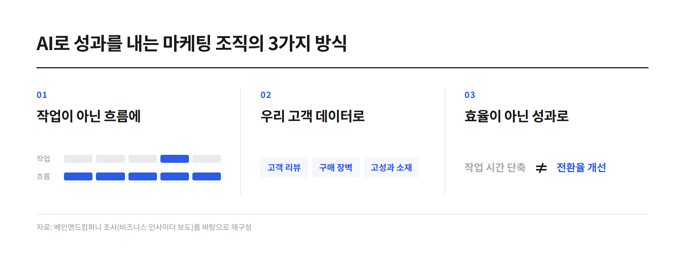

AI로 광고 카피를 만들고, 콘텐츠 아이디어를 뽑고, 광고 성과를 요약하는 일은 이제 낯설지 않습니다. 예전에는 몇 시간씩 걸리던 작업도 AI를 활용하면 훨씬 빠르게 끝낼 수 있습니다. 덕분에 마케터가 처리할 수 있는 업무량도 늘었습니다.
그런데 한 가지 의문이 남습니다. 업무가 빨라지고 결과물이 많아진 만큼 실제 마케팅 성과도 좋아졌을까요?
2026년 9월 30일 비즈니스 인사이더가 소개한 베인앤드컴퍼니의 조사에 따르면, 조사에 참여한 마케팅·재무 분야 고위 임원 중 95%는 소속 조직이 AI를 도입했다고 답했습니다. 반면 AI가 성과에 상당한 영향을 미치고 있다고 응답한 비율은 6%에 불과했습니다.
AI를 사용하는 조직은 많지만, 그 효과를 뚜렷하게 체감하는 조직은 상대적으로 적다는 이야기입니다.
물론 이 결과만으로 AI의 효과가 없다고 단정할 수는 없습니다. 다만 AI 도입 자체를 성과로 받아들이고 있지는 않은지 돌아볼 필요는 있습니다. 도구를 사용하는 것과 그 도구로 문제를 해결하는 것은 다른 일이기 때문입니다.
AI로 더 많이 만드는 것과 더 잘하는 것은 다르다
광고 소재 제작을 예로 들어보겠습니다.
AI를 활용하면 짧은 시간 안에 여러 개의 광고 카피를 만들 수 있습니다. 기존 소재를 참고해 다양한 표현을 시도하거나, 타깃별로 메시지를 바꾸는 작업도 한결 수월해집니다. 이전보다 많은 소재를 테스트할 수 있다는 점에서 분명 유용합니다.
하지만 소재를 많이 만들었다고 해서 광고 성과까지 좋아지는 것은 아닙니다.
어떤 소재가 효과적인지 판단할 기준이 없거나, 테스트 결과를 다음 기획에 반영하지 않는다면 제작량만 늘어날 수 있습니다. 실제로 고객이 어떤 메시지에 반응했는지 확인하지 않은 채 AI가 만든 카피를 계속 추가한다면, 업무는 빨라져도 성과를 개선하는 데는 한계가 있습니다.
광고 성과 분석에서도 비슷한 일이 벌어집니다. AI는 클릭률이나 전환율의 변화를 빠르게 정리하고, 가능한 원인을 몇 가지 제안할 수 있습니다. 하지만 지표가 변한 이유를 파악하려면 당시의 예산과 소재 변경 이력, 프로모션 여부, 랜딩페이지 상태 등 여러 요소를 함께 살펴봐야 합니다.
결국 중요한 것은 AI가 얼마나 많은 결과물을 만들어내느냐가 아닙니다. 그 결과물을 활용해 기존보다 나은 판단을 내릴 수 있느냐에 가깝습니다.
성과를 내는 조직은 AI를 업무에 붙이는 방식부터 다르다
그렇다면 AI를 실제 성과로 연결하려면 무엇이 달라져야 할까요?
베인앤드컴퍼니의 조사에서는 성과를 내는 기업들이 AI 전략을 통합적으로 관리하고, 기존 업무 방식을 재설계하며, 고객 데이터에 기반한 활용 사례에 집중하는 경향을 보였다고 전했습니다.
이를 마케팅 업무에 적용해 보면 몇 가지 방향을 생각해 볼 수 있습니다.
첫 번째는 개별 작업을 빠르게 처리하는 데서 벗어나 업무의 흐름 전체를 살펴보는 것입니다.
카피 작성에 AI를 활용하는 것만으로도 시간을 줄일 수 있지만, 고객 분석부터 가설 설정, 소재 기획, 테스트 결과 정리까지 연결한다면 활용 범위는 더 넓어집니다. 사람이 반복적으로 수행하던 작업을 줄이고, 그만큼 결과를 검토하거나 다음 실험을 설계하는 데 시간을 쓸 수 있기 때문입니다.
두 번째는 우리 브랜드와 고객에 대한 정보를 충분히 활용하는 것입니다.
브랜드의 특성이나 주요 고객, 과거 광고 성과를 고려하지 않은 채 AI에 아이디어를 요청하면 어디서나 볼 수 있는 답변이 나오기 쉽습니다. 반대로 실제 고객 리뷰와 구매 장벽, 기존 고성과 소재의 특징 등을 함께 살펴보면 보다 구체적인 가설을 세우는 데 도움이 됩니다.
세 번째는 AI를 활용한 결과가 실제로 나아졌는지 확인하는 것입니다.
작업 시간이 줄었는지, 수정 횟수가 감소했는지, 광고 소재의 전환율이 개선됐는지는 서로 다른 지표입니다. 업무 효율이 높아졌다는 사실만으로 마케팅 성과까지 개선됐다고 판단해서는 안 됩니다. AI를 도입하기 전과 후를 비교할 수 있도록 목표와 측정 기준을 먼저 정해두는 것이 필요합니다.

퍼포먼스 마케팅에서는 어떻게 활용할 수 있을까?
퍼포먼스 마케팅은 광고비와 클릭, 전환 등 비교할 수 있는 데이터가 축적된다는 점에서 AI의 활용 결과를 확인하기 좋은 분야입니다. 다만 데이터를 AI에 입력하고 분석을 요청하는 것만으로는 충분하지 않습니다.
예를 들어 캠페인의 CPA가 갑자기 상승했다고 가정해 보겠습니다. 단순히 원인을 분석해 달라고 요청하면 일반적인 가능성을 나열하는 데 그칠 수 있습니다. 대신 예산 변경 시점과 소재 교체 이력, 전환 수 추이, 프로모션 진행 여부 등을 함께 제공하면 원인을 좁혀가는 데 도움을 받을 수 있습니다.
소재 기획도 마찬가지입니다. 새로운 카피를 무작정 생성하기보다는 기존 소재의 성과와 고객 리뷰를 살펴보고, 어떤 메시지가 구매를 유도할 수 있을지 가설을 세우는 데 AI를 활용할 수 있습니다. 이후 실제 광고를 집행하고 결과를 비교하면 다음 소재를 기획할 때 참고할 근거도 쌓입니다.
물론 AI가 제안한 원인이 반드시 정답인 것은 아닙니다. 분석에 필요한 데이터가 부족하거나 여러 변수가 동시에 작용했다면 그럴듯한 설명도 실제 원인과 다를 수 있습니다. AI가 제시한 내용을 결론으로 받아들이기보다, 확인해야 할 가설로 활용하는 편이 적절합니다.
이 과정에서 마케터의 역할도 달라집니다. 단순히 결과물을 만드는 데 그치지 않고, 어떤 문제를 해결할 것인지 정하고, 결과를 검증하고, 다음 액션으로 연결하는 역할이 중요해집니다.
AI 활용의 출발점은 새로운 도구가 아니라 지금의 업무를 돌아보는 것
AI를 도입했는데도 기대했던 변화가 없다면, 새로운 도구를 추가하기 전에 현재 업무부터 살펴볼 필요가 있습니다.
반복 작업에 지나치게 많은 시간을 쓰고 있지는 않은지, AI에 필요한 맥락과 데이터를 충분히 제공하고 있는지, 생성된 결과물을 검증하는 기준이 있는지 확인해 볼 수 있습니다. 무엇보다 AI를 활용한 뒤 실제 업무 방식이나 의사결정이 달라졌는지를 돌아봐야 합니다.
AI를 활용하는 방법은 계속 늘어나고 있습니다. 하지만 모든 업무에 AI를 적용하는 것이 반드시 효율적인 것도 아니고, 활용 횟수가 많다고 해서 성과가 보장되는 것도 아닙니다.
중요한 것은 AI를 사용했다는 사실보다 그 결과로 무엇이 달라졌는지 설명할 수 있는 것입니다.
광고 카피를 더 빠르게 만드는 것에서 끝나는지, 아니면 더 나은 소재를 찾는 데까지 이어지는지. 보고서 작성 시간을 줄이는 것에서 끝나는지, 아니면 데이터를 바탕으로 다음 캠페인의 방향을 개선하는지. 이 차이가 AI 활용의 실질적인 가치를 결정합니다.
AI가 마케터의 업무를 대신할 수 있는 범위는 앞으로 더 넓어질 것입니다. 그렇다고 마케터의 역할이 단순히 AI 도구를 능숙하게 다루는 것으로 바뀌는 것은 아닙니다. 해결해야 할 문제를 정의하고, 적절한 데이터를 바탕으로 판단하며, 결과를 검증하는 역량은 여전히 중요합니다.
AI를 얼마나 많이 쓰는지가 아니라, AI를 활용해 무엇을 개선했는지. 이제는 도입 여부보다 그다음 질문에 답해야 할 때입니다.
출처: Business Insider — Bain & Company AI Marketing Survey (2026. 09. 30)